Imagine uma página ou tela em branco: cada elemento adicionado a essa página ou tela absorve carga cognitiva por parte de seu público — em outras palavras, exige poder do cérebro para processar. Portanto, queremos examinar com discernimento os elementos visuais que permitimos em nossas comunicações. De modo geral, identificar qualquer coisa que não esteja acrescentando valor informativo — ou adicionando valor informativo suficiente para compensar sua presença — e removê-la. Identificar e eliminar a saturação é o enfoque deste capítulo.
Você já sentiu o peso da carga cognitiva. Talvez estivesse assistindo a uma conferência, quando o palestrante passando os slides faz uma pausa em um muito cheio e complicado. Uau, você disse “argh” em voz alta ou foi apenas em sua mente? Ou talvez você estivesse lendo um relatório ou jornal e um gráfico chamou sua atenção por tempo suficiente para pensar: “parece interessante, mas não tenho ideia do que fazer com isso” — e, em vez de perder tempo em decifrá-lo, virou a página.
Nesses dois casos, o que você experimentou foi uma carga cognitiva excessiva ou extrínseca.
Experimentamos carga cognitiva sempre que recebemos informações. A carga cognitiva pode ser considerada o esforço mental exigido para aprender novas informações. Quando fazemos um computador trabalhar, estamos contando com seu poder de processamento. Quando pedimos ao nosso público para trabalhar, estamos usando seu poder de processamento mental.
Isso é carga cognitiva. O cérebro humano tem uma quantidade finita desse poder de processamento mental. Como designers da informação, queremos ser inteligentes no uso da capacidade cerebral de nosso público. Os exemplos anteriores apontam para uma carga cognitiva extrínseca: processamento que ocupa recursos mentais, mas não ajuda o público a entender a informação.
Isso é algo que queremos evitar.
Com o passar do tempo, vários conceitos foram apresentados na tentativa de explicar e ajudar a dar orientações para reduzir a carga cognitiva que impomos ao público com nossas comunicações visuais. Em seu livro The Visual Display of Quantitative Information (sem tradução no Brasil), Edward Tufte se refere à maximização da relação data-ink (dados-tinta), dizendo que “quanto maior a porção de tinta dedicada aos dados em um gráfico, melhor (sendo as outras questões relevantes equivalentes)”. Isso também pode ser referido como maximizar a relação sinal-ruído (consulte o livro de Nancy Duarte, Ressonância: Apresente Histórias Visuais que Encantem o Público, ed. Alta Books), de Nancy Duarte, na qual o sinal é a informação que queremos comunicar e o ruído são os elementos que adicionamos ou, em alguns casos, reduzimos da mensagem que estamos tentando transmitir para o público.
No que diz respeito às nossas comunicações visuais, o que mais importa é a carga cognitiva percebida por parte de nosso público: o quanto ele acredita que precisará se esforçar para entender a informação de sua comunicação.
Essa é a decisão a que provavelmente chegam sem grande cogitação consciente (se houver) e pode fazer a diferença entre transmitir sua mensagem claramente ou não.
De modo geral, você deve minimizar a carga cognitiva percebida (ao que seja razoável e ainda permita transmitir a informação) por seu público.
Um dos culpados que podem contribuir para a carga cognitiva excessiva ou extrínseca é algo que chamo simplesmente de saturação. São aqueles elementos visuais que ocupam espaço, mas não aumentam o entendimento.
Vamos examinar mais especificamente quais elementos podem ser considerados saturação em breve, mas agora quero falar de modo geral sobre por que ela é ruim.
Há uma razão simples pela qual devemos reduzir a saturação: ela faz com que nossos visuais pareçam mais complicados que o necessário.
Talvez sem reconhecê-la explicitamente, a presença de saturação em nossas comunicações visuais podem causar uma experiência ruim para o usuário — ou, pior — incômoda para nosso público (é aquele momento “argh” que citei no início deste capítulo). A saturação pode fazer algo parecer mais complicado do que realmente é. Quando nossos visuais parecem complicados, corremos o risco de nosso público decidir que não quer entender o que estamos mostrando, a ponto de perdermos nossa capacidade de nos comunicarmos com ele. Isso não é bom.
Quando for identificar quais elementos dos visuais são sinal (a informação que queremos comunicar) e quais podem ser ruído (saturação), considere os Princípios da Gestalt de Percepção Visual. A Escola de Psicologia Gestalt começou no início dos anos 1900 para entender como as pessoas percebem a ordem no mundo ao redor. Ela elaborou os princípios da percepção visual, ainda hoje aceitos, que definem como as pessoas interagem e produzem ordem a partir de estímulos visuais.
Vamos discutir seis princípios aqui: proximidade, similaridade, acercamento, fechamento, continuidade e conexão. Para cada um, vou mostrar um exemplo do princípio aplicado a uma tabela ou gráfico.
Tendemos a pensar que objetos fisicamente próximos fazem parte de um grupo. O princípio da proximidade está demonstrado na Figura 3.1: você vê naturalmente os pontos como três grupos distintos, graças à sua proximidade relativa.
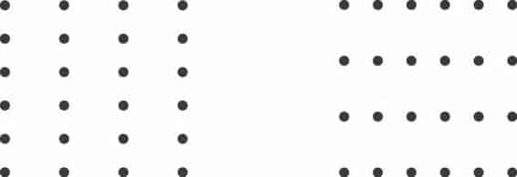
FIGURA 3.1 PRINCÍPIO DA PROXIMIDADE DA GESTALT
Podemos aproveitar isso na maneira como as pessoas veem design de tabelas.
Na Figura 3.2, apenas por diferenciar o espaçamento entre os pontos, seus olhos são atraídos pelas colunas no primeiro caso ou pelas linhas, no segundo.
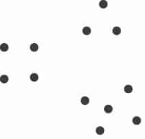
FIGURA 3.2 VOCÊ VÊ COLUNAS E LINHAS SIMPLESMENTE POR CAUSA DO ESPAÇAMENTO ENTRE OS PONTOS
Objetos que têm cor, forma, tamanho ou orientação semelhantes são percebidos como relacionados ou pertencentes a parte de um grupo. Na Figura 3.3, você associa naturalmente os círculos azuis à esquerda ou os quadrados cinza, à direita.
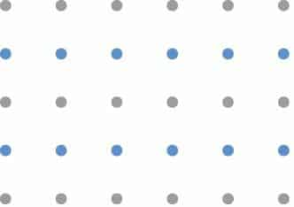
FIGURA 3.3 PRINCÍPIO DA SIMILARIDADE DA GESTALT
Isso pode ser aproveitado em tabelas, para ajudar a chamar a atenção do público para onde queremos focar. Na Figura 3.4, a similaridade da cor é uma pista para nossos olhos lerem as linhas (em vez de colunas). Isso elimina a necessidade de elementos adicionais, como bordas, para ajudar a chamar nossa atenção.
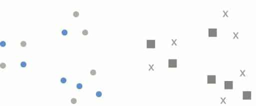
FIGURA 3.4 VOCÊ VÊ LINHAS DEVIDO À SIMILARIDADE DA COR
Achamos que objetos fisicamente delimitados fazem parte de um grupo. Não é preciso um acercamento muito forte para isso: um sombreado de fundo claro frequentemente é suficiente, como demonstrado na Figura 3.5.
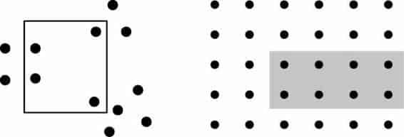
FIGURA 3.5 PRINCÍPIO DO ACERCAMENTO DA GESTALT
Um modo de aproveitar o princípio do acercamento é traçar uma distinção visual dentro de nossos dados, como no gráfico da Figura 3.6.
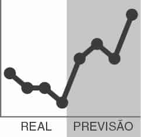
FIGURA 3.6 A ÁREA SOMBREADA SEPARA A PREVISÃO DOS DADOS REAIS
O conceito do fechamento diz que as pessoas gostam que as coisas sejam simples e se encaixem nas construções que já estão em nossas mentes. Por isso, tendemos a perceber um conjunto de elementos individuais como uma única forma reconhecível, quando podemos — quando partes de um todo estão faltando, nossos olhos preenchem as lacunas. Por exemplo, os elementos da Figura 3.7 tenderão a ser percebidos primeiramente como um círculo e somente depois como elementos individuais.
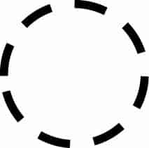
FIGURA 3.7 PRINCÍPIO DO FECHAMENTO DA GESTALT
É comum os aplicativos de geração de gráficos (por exemplo, o Excel) terem configurações padrão que incluem elementos como bordas e sombreado de fundo. O princípio do fechamento nos diz que eles são desnecessários — podemos removê-los e nosso gráfico ainda aparecerá como uma entidade coesa. Bônus: quando retiramos esses elementos desnecessários, nossos dados se destacam mais, como mostrado na Figura 3.8.
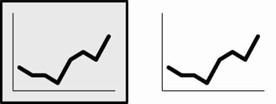
FIGURA 3.8 O GRÁFICO AINDA PARECE COMPLETO SEM A BORDA E O SOMBREADO DE FUNDO
O princípio da continuidade é semelhante ao do fechamento: ao olharmos os objetos, nossos olhos buscam o caminho mais suave e criam continuidade no que vemos naturalmente, mesmo onde ela pode não existir explicitamente.
Por exemplo, na Figura 3.9, se eu pegar os objetos (1) e separá-los, a maioria das pessoas esperará ver o que está mostrado em seguida (2), embora pudesse facilmente ser o que aparece depois (3).
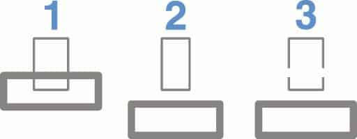
FIGURA 3.9 PRINCÍPIOS DA CONTINUIDADE DA GESTALT
Na aplicação desse princípio, removi a linha vertical do eixo y no gráfico da Figura 3.10. Seus olhos ainda veem que as barras estão alinhadas no mesmo ponto, graças ao espaço em branco uniforme (um direcionamento sutil) entre as legendas à esquerda e os dados à direita. Como vimos no princípio do fechamento, a retirada de elementos desnecessários permite que nossos dados se destaquem mais.
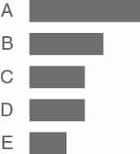
FIGURA 3.10 GRÁFICO COM A LINHA DO EIXO Y REMOVIDA
O último princípio da Gestalt que vamos focar é a conexão. Tendemos a considerar objetos fisicamente conectados como parte de um grupo. A propriedade conectiva normalmente tem um valor associativo mais forte do que cor, tamanho ou forma similar. Ao examinar a Figura 3.11, note que seus olhos provavelmente fazem pares das formas conectadas por linhas (em vez da cor, tamanho ou forma similar): é o princípio da conexão em ação.
Normalmente, a propriedade conectiva não é mais forte que o acercamento, mas você pode afetar essa relação por meio de espessura e tonalidade de linhas para criar a hierarquia visual desejada (vamos falar mais sobre hierarquia visual quando discutirmos os atributos pré-atentivos, no Capítulo 4).
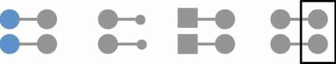
FIGURA 3.11 PRINCÍPIO DA CONEXÃO DA GESTALT
Um modo frequente de usarmos o princípio da conexão é nos gráficos de linhas, para ajudar nossos olhos a ver ordem nos dados, como na Figura 3.12.
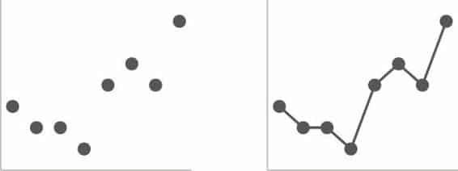
FIGURA 3.12 LINHAS CONECTAM OS PONTOS
Como você aprendeu nesta breve visão geral, os princípios da Gestalt nos ajudam a entender como as pessoas veem, o que podemos usar para identificar elementos desnecessários e facilitar o processamento de nossas comunicações visuais. Ainda não terminamos. No final deste capítulo, vamos discutir como podemos aplicar alguns desses princípios em um exemplo real.
Mas primeiro vamos mudar nosso foco para dois outros tipos de saturação visual.
Quando o design é cuidadoso, ele assume um papel secundário de modo que seu público nem mesmo o percebe. Contudo, quando não é, o público sente o peso. Vamos ver um exemplo para entender o impacto que a ordem visual — e a falta dela — pode ter em nossas comunicações visuais.
Veja a Figura 3.13, que resume o retorno sobre fatores considerados por organizações sem fins lucrativos na seleção de vendedores. Note especificamente as observações que você possa ter a respeito da disposição dos elementos na página.
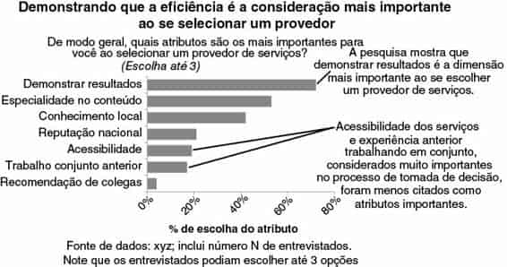
FIGURA 3.13 RESUMO DO RETORNO DA PESQUISA
Ao examinar as informações, você poderia pensar: “parece muito bom”. Está bem: não é horrível. Pelo lado positivo, as informações estão claramente esboçadas, o gráfico está bem ordenado e legendado, e as principais observações estão enunciadas e visualmente vinculadas a onde devemos olhar no gráfico. Mas quanto ao design global da página e ao posicionamento dos elementos, eu discordaria de qualquer elogio. Para mim, o visual agregado parece desorganizado e incômodo de ler, como se os vários componentes fossem colocados aqui e ali, sem considerar a estrutura da página global.
Podemos melhorar esse visual significativamente, fazendo algumas alterações relativamente pequenas. Dê uma olhada na Figura 3.14. O conteúdo é exatamente o mesmo; apenas o posicionamento e a formatação dos elementos foram modificados.
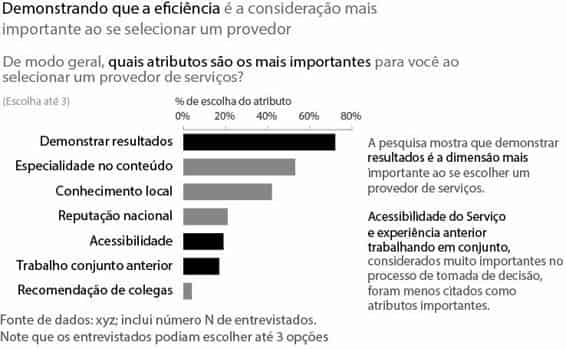
FIGURA 3.14 RESUMO DO RETORNO DA PESQUISA REMODELADO
Comparada com o visual original, a segunda iteração parece bem mais fácil.
Existe ordem. É evidente que pensamento consciente foi empregado no design e na disposição global dos componentes. Especificamente, esta última versão foi projetada com maior atenção ao alinhamento e aos espaços em branco. Vamos ver cada um em detalhes.
A alteração de maior impacto no exemplo de “antes e depois” anterior foi a mudança de texto centralizado para justificado à esquerda. Na versão original, cada bloco de texto está centralizado na página. Isso não cria linhas limpas, nem à esquerda, nem à direita, o que pode fazer um layout pensado parecer desmazelado. Eu procuro não usar texto centralizado por essa razão.
A decisão de alinhar seu texto à esquerda ou à direita deve ser tomada no contexto dos outros elementos da página. De modo geral, o objetivo é criar linhas limpas (tanto horizontal como verticalmente) de elementos e espaços em branco.
Para ajudar a garantir que seus elementos fiquem alinhados ao colocá-los em uma página dentro de seu software de apresentação, ative as réguas ou linhas de grade que a maioria dos programas possui. Isso permitirá alinhar precisamente os elementos para criar uma aparência mais limpa. A funcionalidade de tabelas incorporada à maioria dos aplicativos de apresentação também pode ser usada como método de força bruta improvisado: crie uma tabela a fim de ter linhas de grade para o posicionamento dos elementos. Quando tudo estiver alinhado como você deseja, remova a tabela ou torne as bordas invisíveis para que reste apenas a página perfeitamente organizada.
Sem outras dicas visuais, seu público normalmente começará na parte superior esquerda da página ou tela e moverá os olhos por ela em forma de “z” (ou várias formas de “z”, dependendo do layout) ao captar informações.
Por isso, quando se trata de tabelas e gráficos, gosto de justificar o texto mais à esquerda e acima (título, títulos de eixo, legendas). Isso significa que o público vai ver os detalhes que informam como ler a tabela ou gráfico antes de chegar aos dados em si.
Como parte de nossa discussão sobre alinhamento, vamos examinar os componentes diagonais. No exemplo anterior, a versão original (Figura 3.13) tinha linhas diagonais conectando as informações aos dados e legendas no eixo x orientados na diagonal; na remodelação, as primeiras foram removidas e os últimos alterados para orientação horizontal (Figura 3.14).
Geralmente, elementos diagonais, como linhas e texto, devem ser evitados.
Eles parecem desordenados e, no caso do texto, são mais difíceis de ler que seus equivalentes horizontais. No que diz respeito à orientação de texto, um estudo (Wigdor e Balakrishnan, 2005) descobriu que a leitura de texto inclinado a 45º em qualquer direção era, em média, 52% mais lenta que a leitura de texto com orientação normal (para texto inclinado a 90º em qualquer direção era 205% mais lenta, em média). É melhor evitar elementos diagonais na página.
Nunca entendi bem esse fenômeno, mas, por algum motivo, as pessoas tendem a ter medo de espaço em branco em uma página. Uso o termo “espaço em branco” para me referir ao espaço vazio na página. Se suas páginas são azuis, por exemplo, seria o “espaço azul” — não sei bem porque seriam azuis, mas o uso de cores é uma conversa que teremos mais adiante.
Talvez você já tenha ouvido esta opinião: “ainda há espaço nessa página; vamos acrescentar algo ali”, ou, pior ainda, “ainda há espaço nessa página; vamos adicionar mais dados”. Não! Nunca adicione dados apenas para adicionar dados — só adicione dados com uma finalidade pensada e específica!
Precisamos ficar mais à vontade com espaço em branco.
Espaço em branco na comunicação visual é tão importante quanto as pausas em um discurso. Talvez você tenha presenciado uma apresentação que não tinha pausas. É como o seguinte: há um orador diante de você e possivelmente por estar nervoso ou talvez porque esteja tentando passar mais material do que deve no tempo designado está falando super rápido e você está pensando em como ele consegue respirar e você gostaria de fazer uma pergunta mas o orador já mudou para o tópico seguinte e ainda não fez uma pausa longa o suficiente para você fazer a pergunta. Essa é uma experiência desconfortável para o público, semelhante ao desconforto que você pode ter sentido ao ler essa sentença contínua e sem pontuação.
Agora, imagine o efeito se esse mesmo apresentador fizesse uma única declaração audaciosa: “Morte aos gráficos de pizza!”
E, então, fizesse uma pausa de 15 segundos para deixar a declaração ressoar.
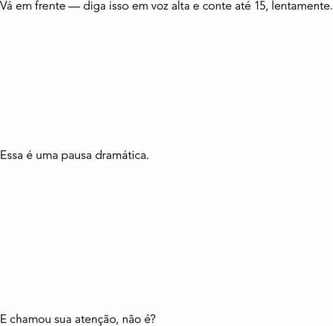
Esse é o mesmo efeito poderoso que o espaço em branco usado estrategicamente pode ter em nossas comunicações visuais. A falta dele — como a ausência de pausas em uma apresentação falada — é simplesmente desconfortável para nosso público. Desconforto do público em resposta ao design de nossas comunicações visuais é algo que devemos evitar. Espaço em branco pode ser usado estrategicamente para chamar a atenção para as partes da página que não são espaço em branco.
Quando se trata de preservar espaço em branco, aqui estão algumas diretrizes mínimas. As margens devem permanecer livres de texto e recursos visuais.
Resista ao impulso de alongar os elementos para ocupar o espaço disponível; em vez disso, dimensione os recursos visuais adequadamente, de acordo com o conteúdo. Além dessas diretrizes, pense em como você pode usar espaço em branco estrategicamente para dar ênfase, conforme ilustrado na pausa radical anterior. Se houver algo realmente importante, pense na possibilidade de colocá-lo na página . Em alguns casos, poderia ser uma única frase ou mesmo um número. Vamos falar mais sobre o uso estratégico de espaço em branco e ver um exemplo quando discutirmos estética, no Capítulo 5.
Um claro contraste pode ser um sinal para nosso público, ajudando-o a saber onde concentrar sua atenção. Vamos explorar essa ideia com mais detalhes em capítulos posteriores. A falta de claro contraste, por outro lado, pode ser uma forma de saturação. Ao discutir o valor fundamental do contraste, frequentemente empresto uma analogia de Colin Ware ( Information Visualization: Perception for Design, sem tradução no Brasil, 2004), que disse que é fácil reconhecer um falcão em um céu cheio de pombos, mas à medida que a variedade de pássaros aumenta, fica cada vez mais difícil distinguir o falcão. Isso destaca a importância do uso estratégico de contraste no design visual: quanto mais tornamos as coisas diferentes, menor o grau com que cada uma delas se destaca. Para explicar isso de outra forma, se há algo realmente importante para nosso público saber ou ver (o falcão), devemos tornar esse algo muito diferente do resto.
Vamos ver um exemplo para ilustrar melhor esse conceito.
Imagine que você trabalha no varejo e quer saber como seus clientes se sentem a respeito de várias dimensões das experiências de compra em sua loja, comparadas com seus concorrentes. Você fez uma pesquisa para coletar essa informação e agora está tentando entender o que ela diz. Você criou um índice de desempenho ponderado para resumir cada categoria de interesse (quanto maior o índice, melhor o desempenho e vice-versa). A Figura 3.15 mostra o índice de desempenho ponderado nas categorias de sua empresa e de cinco concorrentes.
Estude-o por uns instantes e tome nota de sua linha de raciocínio enquanto obtém as informações.
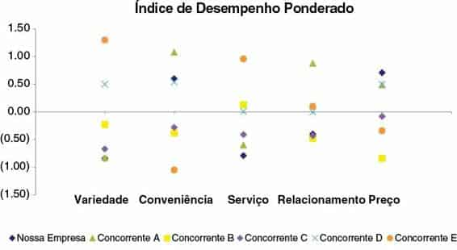
FIGURA 3.15 GRÁFICO ORIGINAL
Se você tivesse que descrever a Figura 3.15 em uma única palavra, qual seria ela? Talvez venham à mente palavras como cheio, confuso e cansativo, mesmo se considerarmos a utilização de diversas cores na identificação dos concorrentes. Há muitas informações nesse gráfico. São tantas coisas concorrendo pela nossa atenção que é difícil saber para onde olhar.
Vamos examinar exatamente o que estamos olhando. Como mencionei, os dados representados no gráfico são um índice de desempenho ponderado.
Você não precisa se preocupar com os detalhes de como isso é calculado, mas sim entender que se trata de uma métrica de resumo de desempenho que gostaríamos de comparar entre várias categorias (mostradas no eixo x horizontal: Variedade, Conveniência, Serviço, Relacionamento e Preço) de “Nossa Empresa” (representada pelo losango azul), comparada com vários concorrentes (as outras formas coloridas). Um índice mais alto representa desempenho melhor e um índice mais baixo significa desempenho inferior.
Entender essas informações é um processo lento, com muito ir e vir entre a legenda na parte inferior e os dados do gráfico, para decifrar o que está sendo transmitido. Mesmo sendo muito pacientes e querendo entender as informações desse visual, isso é quase impossível, pois “Nossa Empresa” (o losango azul) às vezes é ocultada pelos outros pontos de dados, de modo que não podemos nem mesmo ver qual é a comparação mais importante!
Isso acontece quando a falta de contraste (e outros problemas de design) dificulta muito além do necessário a interpretação das informações.
Veja a Figura 3.16, onde usamos contraste mais estrategicamente.
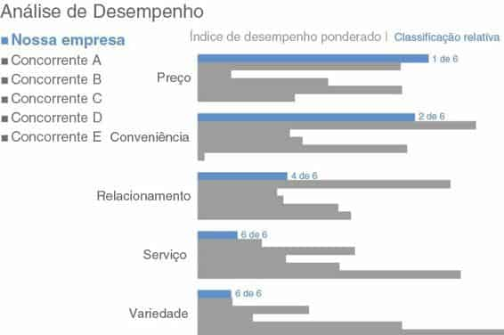
FIGURA 3.16 GRÁFICO REMODELADO, USANDO CONTRASTE ESTRATEGICAMENTE
No gráfico revisado, fiz várias mudanças. Primeiro, escolhi um gráfico de barras horizontais para representar as informações. Ao fazer isso, mudei todos os números para uma escala positiva — no gráfico de dispersão original havia alguns valores negativos que aumentavam o desafio à visualização. Essa alteração funciona aqui porque estamos interessados mais nas diferenças relativas do que nos valores absolutos. Nessa remodelação, as categorias que antes estavam no eixo x horizontal agora estão no eixo y vertical. Dentro de cada categoria, o comprimento da barra mostra a métrica de resumo de “Nossa empresa” (em azul) e dos vários concorrentes (em cinza), com as barras mais longas representando o desempenho melhor. A decisão de não mostrar a escala do eixo x neste caso foi deliberada, o que obriga o público a enfocar as diferenças relativas, em vez de entender as minúcias dos números específicos.
Com esse design é fácil ver rapidamente duas coisas:
Os concorrentes são distinguidos com base na ordem em que aparecem (o Concorrente A sempre aparece imediatamente após a barra azul, o Concorrente B depois dele e assim por diante), o que está descrito na legenda à esquerda. Se fosse importante identificar rapidamente cada concorrente, esse design não permitiria fazer isso imediatamente. Mas se essa é uma comparação de segunda ou terceira ordem em termos de prioridade e isso não é o mais importante, esta estratégia pode funcionar bem. Na remodelação, também organizei as categorias em ordem decrescente do índice de desempenho ponderado de “Nossa empresa”, o que proporciona uma construção para nosso público usar ao receber as informações, e adicionei uma métrica de resumo (classificação relativa) para que seja fácil saber rapidamente como “Nossa empresa” se comporta em relação à concorrência em cada categoria.
Note como o uso eficiente de contraste (e outras escolhas de design pensadas) agiliza, facilita e deixa o processo de obtenção das informações que estamos buscando mais confortável do que no gráfico original.
Vi casos nos quais o título do visual indicava que os valores eram dólares, mas os sinais de dólar não foram incluídos junto aos números na tabela ou gráfico. Por exemplo, acho confuso um gráfico intitulado “Vendas Mensais ($USD Milhões)” com 10, 20, 30, 40, 50 como legendas de eixo y. Incluir o sinal “$” com cada número facilita a interpretação dos valores. Seu público não precisa lembrar que está olhando para dólares, porque eles estão legendados explicitamente. Existem alguns elementos que sempre devem ser mantidos com números, incluindo sinais de moeda, de porcentagem e pontos em números grandes.
Agora que discutimos o que é saturação, por que é importante eliminá-la de nossas comunicações visuais e como reconhecê-la, vamos ver um exemplo real e examinar como o processo de identificação e remoção de saturação melhora nosso visual e a clareza da história que estamos tentando contar.
Cenário: Imagine que você gerencia uma equipe de tecnologia da informação (TI). Sua equipe recebe tíquetes, ou questões técnicas, dos funcionários. No ano passado, duas pessoas saíram da equipe e, na época, você decidiu não substituí-las. Você tem ouvido rumorosas reclamações dos demais funcionários sobre terem de “preencher a lacuna”. Recentemente, você foi questionado sobre suas necessidades de contratação para o próximo ano e está se perguntando se deve contratar mais duas pessoas. Primeiro, você quer entender o impacto que a saída das pessoas no ano passado teve na produtividade global de sua equipe. Você coloca em um gráfico a tendência mensal dos tíquetes recebidos e aqueles processados no ano civil passado.
Você vê que há certa evidência de que a produtividade de sua equipe está sendo prejudicada pela falta de pessoal e agora quer tornar o visual que criou a base para seu pedido de contratação.
A Figura 3.17 mostra seu gráfico original.
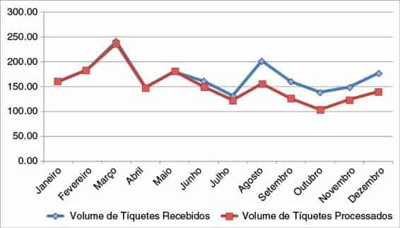
FIGURA 3.17 GRÁFICO ORIGINAL
Examine novamente esse visual, prestando atenção na saturação. Considere as lições que abordamos sobre os princípios da Gestalt, alinhamento, espaço em branco e contraste. Do que podemos nos desfazer ou alterar? Quantos problemas você consegue identificar?
Eu identifiquei seis alterações essenciais para reduzir a saturação. Vamos discuti-las.
1. Remova a borda do gráfico
Bordas de gráfico normalmente são desnecessárias, conforme abordamos em nossa discussão sobre o princípio do fechamento da Gestalt. Em vez disso, use espaço em branco para diferenciar o visual de outros elementos na página, conforme for necessário.
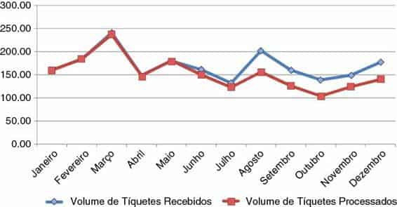
FIGURA 3.18 REMOVA AS BORDAS DO GRÁFICO
2. Remova as linhas de grade
Se você acha que será útil para seu público correr o dedo dos dados até o eixo, ou acha que seus dados serão processados mais eficientemente, pode deixar as linhas de grade. Mas torne-as finas e use uma cor clara, como cinza.
Não permita que elas concorram visualmente com os dados, use cores distintas para cada linha do gráfico. Quando puder, desfaça-se delas completamente: isso permite um maior contraste e seus dados se destacarão mais.
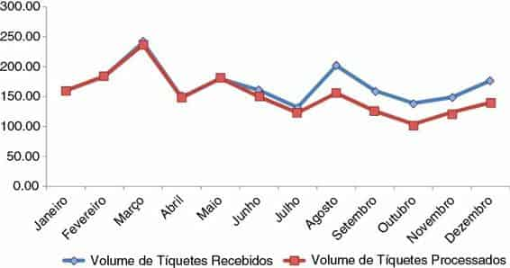
FIGURA 3.19 REMOVA AS LINHAS DE GRADE
3. Remova marcadores de dados
Lembre-se: cada elemento acrescenta carga cognitiva por parte de seu público. Aqui, estamos adicionando carga cognitiva para processar dados que já estão representados visualmente pelas linhas. Isso não quer dizer que você nunca deve usar marcadores de dados, mas use-os intencionalmente e com uma finalidade, não porque sua inclusão é o padrão de seu aplicativo de geração de gráficos.
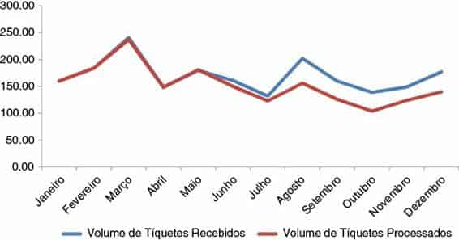
FIGURA 3.20 REMOVA OS MARCADORES DE DADOS
4. Limpe as legendas de eixo
Um de meus maiores aborrecimentos são os zeros à direita em legendas no eixo y: eles não transmitem nenhum valor informativo e ainda podem fazer os números parecerem mais complicados do que são! Desfaça-se deles, reduzindo o peso desnecessário na carga cognitiva do público. Também podemos abreviar os meses do ano, para que se encaixem horizontalmente no eixo x, eliminando o texto diagonal.
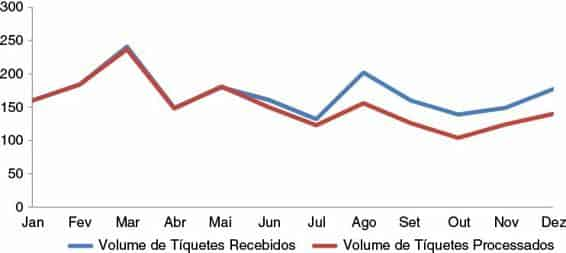
FIGURA 3.21 LIMPE AS LEGENDAS DE EIXO
5. Legende dados diretamente
Agora que eliminamos grande parte da carga cognitiva extrínseca, o trabalho de ir e voltar entre a legenda e os dados é ainda mais evidente. Lembre-se: queremos identificar tudo que pareça esforço para nosso público e assumir nossa responsabilidade como designers da informação. Neste caso, podemos usar o princípio da proximidade da Gestalt e colocar as legendas bem perto dos dados que elas descrevem.
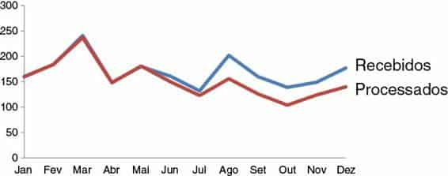
FIGURA 3.22 LEGENDE OS DADOS DIRETAMENTE
6. Potencialize cores consistentes
Já que usamos o princípio da proximidade da Gestalt no passo anterior, vamos pensar também em usar o princípio da similaridade e deixar as legendas da mesma cor que os dados que elas descrevem. Esse é outra dica visual para nosso público, que diz, “essas duas informações estão relacionadas”. Você pode usar uma cor para destacar a informação que mais interessa ou duas cores diferentes e contrastantes.
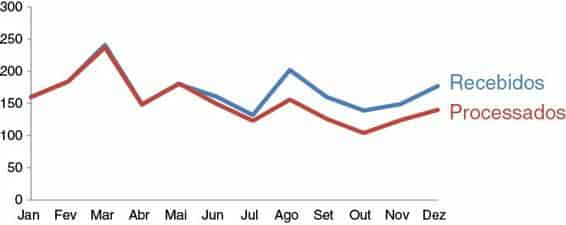
FIGURA 3.23 USE CORES CONSISTENTES
Esse visual ainda não está completo. Mas identificar e eliminar a saturação nos fez andar bastante no sentido de reduzir a carga cognitiva e melhorar a acessibilidade. Veja o “antes e depois”, mostrado na Figura 3.24.
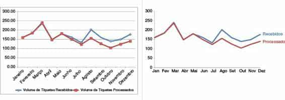
FIGURA 3.24 ANTES E DEPOIS
Sempre que coloca informações diante de seu público, você está gerando carga cognitiva e pedindo a ele para que use o poder do cérebro para processar as informações. A saturação visual cria carga cognitiva excessiva que pode atrapalhar a transmissão de nossa mensagem. Os Princípios da Gestalt para Percepção Visual podem ajudá-lo a entender como seu público vê e permitir que você identifique e remova os elementos visuais desnecessários. Use alinhamento de elementos e mantenha espaço em branco para ajudar a tornar a interpretação de seus recursos visuais uma experiência mais agradável para seu público. Use contraste estrategicamente. A saturação é sua inimiga: elimine-a de seus visuais!
Agora você sabe identificar e eliminar a saturação.